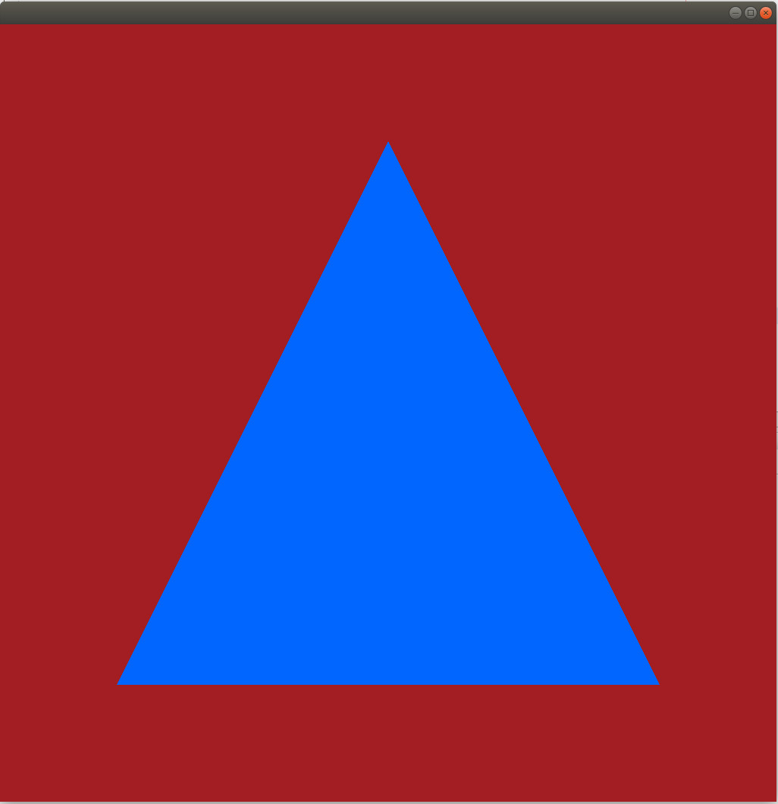

Background
In the previous tutorial we learned how to clear the window and were introduced to a couple of Vulkan entities that are key parts of that operation - the swap chain and the command buffer. Today we are going to render our first triangle. This will require the introduction of four new Vulkan entities - the image view, render pass, framebuffer and the pipeline. Shaders are also required but since they play the same role as in OpenGL programmable pipeline, I don't consider them a new entity. If you are not familiar with shaders make sure you study tutorial 4 before continuing.
Let's start with the largest new object introduced by this tutorial - the pipeline. Actually, the full name is the graphics pipeline because in addition to graphics Vulkan takes the compute field very seriously. In general, compute is composed of many algorithms that are not 3D in nature (they are not based on the way GPUs process triangles) but they can be accelerated by the distributive power of the GPU. This is why the Vulkan spec specifies both a graphics pipeline and a compute pipeline. In this tutorial we are going to use only the graphics pipeline. The graphics pipeline object holds most of the state that is already familiar to us from standard OpenGL. Stuff such as details about various stages in the pipeline ( vertex, geometry, tesselation, etc) that execute shaders; state of the input assembly which creates lines and triangles from buffers; viewport and rasterization state; depth stencil state and much more. We didn't create a graphics pipeline in the previous couple of tutorials because we didn't use the draw command. Now - we have to.
Image views are meta data objects that stand between the shaders and the actual resource that is being read from or written to. They allow us to limit the access to the resource (for example we can create an image view that represents a single image inside an array) and some control on the apearance of the resource in terms of format.
A render pass maintains a list of all resources that will be used and their dependencies (for example when a resource is changed from an output to input during shadow mapping). The framebuffer works hand in hand with the render pass by creating a two step connection from the pipeline to the resource. The render pass is bound to the command buffer and contains indices into the framebuffer. The framebuffer maps these indices to image views (that in turn reference a real resource).
This in a nutshell is an overview of the new objects. Now let's see how to create them and put them to good use.
Source walkthru
class OgldevVulkanApp
{
public:
OgldevVulkanApp(const char* pAppName);
~OgldevVulkanApp();
void Init();
void Run();
private:
void CreateSwapChain();
void CreateCommandBuffer();
void RecordCommandBuffers();
void RenderScene();
void CreateRenderPass();
void CreateFramebuffer();
void CreateShaders();
void CreatePipeline();
std::string m_appName;
VulkanWindowControl* m_pWindowControl;
OgldevVulkanCore m_core;
std::vector<VkImage> m_images;
VkSwapchainKHR m_swapChainKHR;
VkQueue m_queue;
std::vector<VkCommandBuffer> m_cmdBufs;
VkCommandPool m_cmdBufPool;
std::vector<VkImageView> m_views;
VkRenderPass m_renderPass;
std::vector<VkFramebuffer> m_fbs;
VkShaderModule m_vsModule;
VkShaderModule m_fsModule;
VkPipeline m_pipeline;
};
This is the updated main class of the tutorial. Highlighted we can see the four new private methods that were added in order to create the new objects and their respective members to hold the relevant handles.
Let's review the changes top to bottom. The first thing we need to do is add functions to create the four new types of objects. The new functions that were added on top of the material of the previous tutorial are marked in bold face above. We will start with the creation of the render pass.
void OgldevVulkanApp::CreateRenderPass()
{
VkAttachmentReference attachRef = {};
attachRef.attachment = 0;
attachRef.layout = VK_IMAGE_LAYOUT_COLOR_ATTACHMENT_OPTIMAL;
VkSubpassDescription subpassDesc = {};
subpassDesc.pipelineBindPoint = VK_PIPELINE_BIND_POINT_GRAPHICS;
subpassDesc.colorAttachmentCount = 1;
subpassDesc.pColorAttachments = &attachRef;
In order to create a render pass we will need to populate a structure called VkRenderPassCreateInfo. This is a complex structure that points to several sub-structs. Most importantly, it points to a struct that specifies the attachments and subpasses. Attachments are resources connected to the pipeline and subpasses represent a series of draw commands that read or write to the same collection of attachments.
The subpass description struct specifies a collection of attachments that take part in the subpass. This collection includes color, depth/stencil and multisample attachments. In our single subpass description struct we first specify that we are binding this subpass to the graphics pipeline (rather than the compute). Then we specify that we have just one color attachment that we are going to render to and we set the pColorAttachments to point to the descriptor of that attachment (in the case of multiple color attachments this would have been an array of descriptors). We don't have any other type of attachment here so all the other attachment count members remain zero.
All the attachments that the subpass descriptor can point to have the VkAttachmentReference struct type. This struct has just two members. The first member, called 'attachment', is an index into the 'pAttachments' member of the renderPassCreateInfo struct below. Basically the render pass create info struct points to an array of attachements and all the attachments specified in the subpasses are just indices into that array. We have just one attachment here so the index in our case is zero. The other member in the VkAttachmentReference struct is the layout of the attachment. This allows us to indicate how the attachment will be used so the driver can plan ahead accordingly (which is good for performance). We set it to be the target of rendering.
We now have a descriptor of a single subpass which points to a single attachment. Now we must specify all the attachments in the render pass as a single array. The attachments from the subpass are simply indices into this array so the actual data for each attachment is in a single location.
VkAttachmentDescription attachDesc = {};
attachDesc.format = m_core.GetSurfaceFormat().format;
attachDesc.loadOp = VK_ATTACHMENT_LOAD_OP_CLEAR;
attachDesc.storeOp = VK_ATTACHMENT_STORE_OP_STORE;
attachDesc.stencilLoadOp = VK_ATTACHMENT_LOAD_OP_DONT_CARE;
attachDesc.stencilStoreOp = VK_ATTACHMENT_STORE_OP_DONT_CARE;
attachDesc.initialLayout = VK_IMAGE_LAYOUT_PRESENT_SRC_KHR;
attachDesc.finalLayout = VK_IMAGE_LAYOUT_PRESENT_SRC_KHR;
VkRenderPassCreateInfo renderPassCreateInfo = {};
renderPassCreateInfo.sType = VK_STRUCTURE_TYPE_RENDER_PASS_CREATE_INFO;
renderPassCreateInfo.attachmentCount = 1;
renderPassCreateInfo.pAttachments = &attachDesc;
renderPassCreateInfo.subpassCount = 1;
renderPassCreateInfo.pSubpasses = &subpassDesc;
In the render pass create info struct we specify that we have one attachment and one subpass. We also specify the addresses of the corresponding structures that describe the attachment and subpass (if we had more than one then 'attachDesc' and 'subpassDesc' would have been arrays of structs).
Let's review the members in the VkAttachmentDescription structure.
- 'format' is simply the format of the image used for the attachment. We grab it from the surface we created as part of the core (see tutorial 50).
- 'loadOp' specifies whether we preserve or clear the previous contents in the color and depth buffers (we don't need the old contents so we go with clear).
- 'storeOp' specifies whether the content we will generate in the render pass will be stored to the color and depth buffers or be discarded (store in our case).
- 'stencilLoadOp'/'stencilStoreOp' is the same as the above two but for the stencil buffer. We are not using stencil here so we set it to 'don't care'.
- 'initialLayout'/'finalLayout' - images in Vulkan are stored in an implementationn defined layout which is opaque to us. This means that we don't know how the images pixels are structured in the physical memory that contains them. What Vulkan does is to provide a few image usage types (a.k.a layouts) that allows the programmer to specify how the image will be used. Each GPU vender can then map this to the most optimal method of storing the image in memory. We can often transition an image from one layout to another. The attributes 'initialLayout'/'finalLayout' specify in what layout the image will be at the start of the render pass and the layout they will transition to when the render pass ends. In our case we start and end with the "presentable" layout. This layout allows a swap chain image to be presented to the display.
VkResult res = vkCreateRenderPass(m_core.GetDevice(), &renderPassCreateInfo, NULL, &m_renderPass);
CHECK_VULKAN_ERROR("vkCreateRenderPass error %d\n", res);
}
Finally, the call to create the render pass is very simple - it takes the device, the address of the create info struct, an allocator (NULL in our case) and returns the handle to the render pass object in the last parameter.
void OgldevVulkanApp::CreateSwapChain()
{
. . .
m_images.resize(NumSwapChainImages);
m_cmdBufs.resize(NumSwapChainImages);
m_views.resize(NumSwapChainImages);
. . .
}
We are going to see how to create the framebuffer but to make sure it doesn't crash on us let's first resize the 'm_views' member (a vector of image views) to the same number as our images and command buffers. This will be used in the next function. This is the only change required in the creation of the swap chain.
void OgldevVulkanApp::CreateFramebuffer()
{
m_fbs.resize(m_images.size());
We need to prepare a framebuffer object for every image so the first thing we do here is to resize the framebuffer vector to match the number of images.
Now lets loop and create the framebuffers. Objects in the pipeline (e.g. shaders) cannot access resources directly. An intermediate entity called an Image View sits between the image and whoever needs to access it. The image view represents a continuous range of image subresources and provides more metadata for accessing. Therefore, we need to create an image view in order for the framebuffer to be able to access the image. We will create an image view for each image and a framebuffer for each image view.
for (uint i = 0 ; i < m_images.size() ; i++) {
VkImageViewCreateInfo ViewCreateInfo = {};
ViewCreateInfo.sType = VK_STRUCTURE_TYPE_IMAGE_VIEW_CREATE_INFO;
ViewCreateInfo.image = m_images[i];
We prepare a VkImageViewCreateInfo structure. The 'image' member must point to the corresponding surface image.
ViewCreateInfo.format = m_core.GetSurfaceFormat().format;
Image views enable us to access the image using a format which is different than the native image format. For example, if the underlying format is 16 bit we can access it as a single 16 bit channel or two 8 bits channel. There are many restrictions about valid combinations. They are specified here.
ViewCreateInfo.viewType = VK_IMAGE_VIEW_TYPE_2D;
We use the view type in order to change the way the system looks at the image. In our case we stay with the original 2D.
ViewCreateInfo.components.r = VK_COMPONENT_SWIZZLE_IDENTITY;
ViewCreateInfo.components.g = VK_COMPONENT_SWIZZLE_IDENTITY;
ViewCreateInfo.components.b = VK_COMPONENT_SWIZZLE_IDENTITY;
ViewCreateInfo.components.a = VK_COMPONENT_SWIZZLE_IDENTITY;
The components member is of the VkComponentMapping type. This structure allows us to map each component of a pixel to a different component. For example, we can broadcast one component across multiple components or change RGBA to GBAR (if it is useful...). The VK_COMPONENT_SWIZZLE_IDENTITY macro simply means each component is mapped to itself.
An image can be complex, containing multiple mip levels (that allow various levels of resolution of the same basic picture) as well as multiple array slices (that allow placing several different textures into the same image). We can use the 'subresourceRange' member in order to specify the part of the image we wish to target. This structure contains five fields:
ViewCreateInfo.subresourceRange.aspectMask = VK_IMAGE_ASPECT_COLOR_BIT;
'aspectMask' specifies the parts of the image (color, depth or stencil) that are part of the view.
ViewCreateInfo.subresourceRange.baseMipLevel = 0;
ViewCreateInfo.subresourceRange.levelCount = 1;
'baseMipLevel' and 'levelCount' specify a subrange of the mip levels in the image. We must be careful not to overflow the actual number of mip levels. Since the minimum is one mip level what we do above is safe.
ViewCreateInfo.subresourceRange.baseArrayLayer = 0;
ViewCreateInfo.subresourceRange.layerCount = 1;
We do the same thing with the array part of the image.
res = vkCreateImageView(m_core.GetDevice(), &ViewCreateInfo, NULL, &m_views[i]);
CHECK_VULKAN_ERROR("vkCreateImageView error %d\n", res);
We can now create the image view and switch to creating the framebuffer.
VkFramebufferCreateInfo fbCreateInfo = {};
fbCreateInfo.sType = VK_STRUCTURE_TYPE_FRAMEBUFFER_CREATE_INFO;
fbCreateInfo.renderPass = m_renderPass;
From section 7.2 of the spec: "Framebuffers and graphics pipelines are created based on a specific render pass object. They must only be used with that render pass object, or one compatible with it". We are not going to go into the issue of render pass compatibility since it is only relevant when you have more than one render pass. For now our framebuffer simply points to the render pass we created earlier.
fbCreateInfo.attachmentCount = 1;
fbCreateInfo.pAttachments = &m_views[i];
The framebuffer can point to multiple attachments. The 'attachmentCount' and 'pAttachments' members specify an array of image views and its size. We have a single attachment.
fbCreateInfo.width = WINDOW_WIDTH;
fbCreateInfo.height = WINDOW_HEIGHT;
Not sure exactly why we need to re-specify the width and height and why they are not fetched from the image. I played with the values here and there was no change in the result. Need to investigate this further.
fbCreateInfo.layers = 1;
When a geometry shader is preset we can render into a multi layer framebuffer. For now, we have a single layer.
res = vkCreateFramebuffer(m_core.GetDevice(), &fbCreateInfo, NULL, &m_fbs[i]);
CHECK_VULKAN_ERROR("vkCreateFramebuffer error %d\n", res);
}
}
Once the image view has been created we can create a framebuffer object that points to it. Notice that both the render pass and the framebuffer have a notion of an attachment, but where the framebuffer contains references to the actual resource (via image view), the render pass only contains indices into the framebuffer which is currently active. Our framebuffer object is now ready and we will see later how it is used. The next thing we need to create are the shaders. Now I'm not going to go too deeply into the background about shaders because we covered that in tutorial #4 and the principle idea hasn't changed. Just read that tutorial again if you need more details. What we need in order to render a triangle are a couple of shaders - a vertex shader and a fragment shader. Usually you will also use a vertex buffer in order to feed vertices into the vertex shader. You cannot go far without vertex buffers because they are the standard way of loading models stored on disk into the graphics pipeline. But at this stage where we just want one triangle on the screen and we want to keep things as simple as possible we can actually use the vertex shader in order to generate three vertices and send them one by one all the way through the pipeline until the rasterizer interpolates them and executes the fragment shader on each interpolated fragment.
Here's the full vertex shader code:
#version 400
void main()
{
vec2 pos[3] = vec2[3]( vec2(-0.7, 0.7),
vec2(0.7, 0.7),
vec2(0.0, -0.7) );
gl_Position = vec4( pos[gl_VertexIndex], 0.0, 1.0 );
}
The vertex shader starts by a pragma that sets the version. The shader code itself is contained in a single function called main(). The shader creates an array of 3 two dimensional vectors and populates them with the coordinates of the triangle. We start at the bottom left and go in a counter clockwise direction until we reach the top. We are not going into the coordinate system at this time but you can play with the values and see for yourself.
Even though we are not going to attach a vertex buffer, since the draw command will be executed with a vertex count of 3 the vertex shader will also execute 3 times. We are not accesing vertices from vertex buffers so I guess this is ok. We now need to send the vertices down the graphics pipeline one by one for each execution of the vertex shader. We do this using the builtin variable gl_VertexIndex. As you may have guessed, this variable is a counter which is initialized to zero and automatically incremented by one for each execution of the vertex shader. We use it in order to index into the pos array and grab the next vertex to send. We set the Z coordinate to zero and the homogenous coordinate W to 1.0. The result is set into another buildin variable called gl_Position. gl_Position is the output from the vertex shader. It is sent down to the rasterizer which accumulates all three vertices and interpolates the fragments between them.
In order to connect the shader to the graphics pipeline we must compile the shader text into binary form. The shader languange in Vulkan is called SPIR-V and it also provides a common intermediate form that is similar to assembly language. This intermediate form will be fed into the driver of your the GPU which will translate it into its own instruction set. The compiler is located in the Vulkan SDK in <Vulkan root>/glslang/build/install/bin/glslangValidator.
The vertex shader is compiled as follows:
glslangValidator -V simple.vert -o vs.spv
simple.vert contains the shader text and the '-o' option specifies the name of the binary file. Note that the compiler decifers the type of the shader stage from the extension of the shader text file so we must use 'vert' for vertex shaders and 'frag' for fragment shaders.
Now for the fragment shader:
#version 400
layout(location = 0) out vec4 out_Color;
void main()
{
out_Color = vec4( 0.0, 0.4, 1.0, 1.0 );
}
The version and entry point are the same idea as the vertex shader, but the fragment shader is focused on the output color of the pixel rather than the location of the vertex. We define the output from the shader as a 4 dimensional color vector and set it to some constant color. That's it. The fragment shader is compiled using:
glslangValidator -V simple.frag -o fs.spv
Now that both shaders are compiled we need to create a couple of shader handles that will later be attached to the pipeline object. The following function takes care of that:
void OgldevVulkanApp::CreateShaders()
{
m_vsModule = VulkanCreateShaderModule(m_core.GetDevice(), "Shaders/vs.spv");
assert(m_vsModule);
m_fsModule = VulkanCreateShaderModule(m_core.GetDevice(), "Shaders/fs.spv");
assert(m_fsModule);
}
VulkanCreateShaderModule() is a wrapper that is defined in the commonVulkan library (which is part of OGLDEV sources) as:
VkShaderModule VulkanCreateShaderModule(VkDevice& device, const char* pFileName)
{
int codeSize = 0;
char* pShaderCode = ReadBinaryFile(pFileName, codeSize);
assert(pShaderCode);
VkShaderModuleCreateInfo shaderCreateInfo = {};
shaderCreateInfo.sType = VK_STRUCTURE_TYPE_SHADER_MODULE_CREATE_INFO;
shaderCreateInfo.codeSize = codeSize;
shaderCreateInfo.pCode = (const uint32_t*)pShaderCode;
VkShaderModule shaderModule;
VkResult res = vkCreateShaderModule(device, &shaderCreateInfo, NULL, &shaderModule);
CHECK_VULKAN_ERROR("vkCreateShaderModule error %d\n", res);
printf("Created shader %s\n", pFileName);
return shaderModule;
}
This function starts by reading the shader binary file. ReadBinaryFile() is a utility function that returns a pointer to a char buffer with the file content as well as its size. The pointer and size are set into a VkShaderModuleCreateInfo structure and the Vulkan function vkCreateShaderModule takes this structure and returns a shader handle.
The final object we need to create is a graphics pipeline object. This is going to be one complex object so hang on... I tried to remove as much as I could from the initialization of this object. It works for me. Hopefully I didn't leave out something which will prevent it from running on your system.
void OgldevVulkanApp::CreatePipeline()
{
VkPipelineShaderStageCreateInfo shaderStageCreateInfo[2] = {};
shaderStageCreateInfo[0].sType = VK_STRUCTURE_TYPE_PIPELINE_SHADER_STAGE_CREATE_INFO;
shaderStageCreateInfo[0].stage = VK_SHADER_STAGE_VERTEX_BIT;
shaderStageCreateInfo[0].module = m_vsModule;
shaderStageCreateInfo[0].pName = "main";
shaderStageCreateInfo[1].sType = VK_STRUCTURE_TYPE_PIPELINE_SHADER_STAGE_CREATE_INFO;
shaderStageCreateInfo[1].stage = VK_SHADER_STAGE_FRAGMENT_BIT;
shaderStageCreateInfo[1].module = m_fsModule;
shaderStageCreateInfo[1].pName = "main";
The pipeline object creation function takes several structures as input parameters. We will review them one by one. The first structure, VkPipelineShaderStageCreateInfo, specifies the shader stages that are enabled. In this tutorial we only have the vertex and the fragment shader so we need an array with two instances. For each shader stage we set the shader stage bit, the handle that we created using vkCreateShaderModule() and the name of the entry point.
VkPipelineVertexInputStateCreateInfo vertexInputInfo = {};
vertexInputInfo.sType = VK_STRUCTURE_TYPE_PIPELINE_VERTEX_INPUT_STATE_CREATE_INFO;
VkPipelineVertexInputStateCreateInfo defines the vertex buffers that feed the pipeline. Since we don't have any we just set the type of the struct and that's it.
VkPipelineInputAssemblyStateCreateInfo pipelineIACreateInfo = {};
pipelineIACreateInfo.sType = VK_STRUCTURE_TYPE_PIPELINE_INPUT_ASSEMBLY_STATE_CREATE_INFO;
pipelineIACreateInfo.topology = VK_PRIMITIVE_TOPOLOGY_TRIANGLE_LIST;
VkPipelineInputAssemblyStateCreateInfo specifies the topology that the pipeline will process. This is a very small struct and we only need to set the topology for the draw call. Vulkan supports ten types of topologies such as point/line/triangle lists, topologies with and without adjacencies, etc. See more in this link.
VkViewport vp = {};
vp.x = 0.0f;
vp.y = 0.0f;
vp.width = (float)WINDOW_WIDTH;
vp.height = (float)WINDOW_HEIGHT;
vp.minDepth = 0.0f;
vp.maxDepth = 1.0f;
The viewport structure defines the viewport transformation, that is, the way the normalized coordinates (-1 to 1 on all axis) will be translated to screen space. We set the X/Y values according to the size of the window. The depth range represents the min/max values that will be written to the depth buffer. We set it to go from zero to one.
VkPipelineViewportStateCreateInfo vpCreateInfo = {};
vpCreateInfo.sType = VK_STRUCTURE_TYPE_PIPELINE_VIEWPORT_STATE_CREATE_INFO;
vpCreateInfo.viewportCount = 1;
vpCreateInfo.pViewports = &vp;
We can now initialize the viewport state struct with our single viewport.
VkPipelineRasterizationStateCreateInfo rastCreateInfo = {};
rastCreateInfo.sType = VK_STRUCTURE_TYPE_PIPELINE_RASTERIZATION_STATE_CREATE_INFO;
rastCreateInfo.polygonMode = VK_POLYGON_MODE_FILL;
rastCreateInfo.cullMode = VK_CULL_MODE_BACK_BIT;
rastCreateInfo.frontFace = VK_FRONT_FACE_COUNTER_CLOCKWISE;
rastCreateInfo.lineWidth = 1.0f;
The VkPipelineRasterizationStateCreateInfo controlls various aspects of rasterization. polygonMode toggles between wireframe and full mode (try changing it to VK_POLYGON_MODE_LINE). cullMode determines whether we cull back or front facing triangles (see what happens when you change it from VK_POLYGON_FRONT_BIT). frontFace tells the pipeline how to read the order of our vertices (whether they are spilled out in clockwise or counter clockwise mode).
VkPipelineMultisampleStateCreateInfo pipelineMSCreateInfo = {};
pipelineMSCreateInfo.sType = VK_STRUCTURE_TYPE_PIPELINE_MULTISAMPLE_STATE_CREATE_INFO;
Multi-Sampling is a mechanism that improves the appearance of lines and the edges of polygons (but also points). This is also known as Anti-Aliasing. While we are not using it we must set the corresponding state in the pipeline so above we prepare a minimal structure for it.
VkPipelineColorBlendAttachmentState blendAttachState = {};
blendAttachState.colorWriteMask = 0xf;
Even though we are not using any blending here we must set the color write mask in the blend state structure to enable writing on all four channels (try playing with various combinations of the bottom 4 bits). Actually, this struct does not stand on its own and must be pointed to by the color blend state create info struct, which we will create next.
VkPipelineColorBlendStateCreateInfo blendCreateInfo = {};
blendCreateInfo.sType = VK_STRUCTURE_TYPE_PIPELINE_COLOR_BLEND_STATE_CREATE_INFO;
blendCreateInfo.logicOp = VK_LOGIC_OP_COPY;
blendCreateInfo.attachmentCount = 1;
blendCreateInfo.pAttachments = &blendAttachState;
The logic op determines whether we will AND/OR/XOR/etc the old and new contents of the framebuffer. Since we want the new contents to override the old we set it to copy.
VkGraphicsPipelineCreateInfo pipelineInfo = {};
pipelineInfo.sType = VK_STRUCTURE_TYPE_GRAPHICS_PIPELINE_CREATE_INFO;
pipelineInfo.stageCount = ARRAY_SIZE_IN_ELEMENTS(shaderStageCreateInfo);
pipelineInfo.pStages = &shaderStageCreateInfo[0];
pipelineInfo.pVertexInputState = &vertexInputInfo;
pipelineInfo.pInputAssemblyState = &pipelineIACreateInfo;
pipelineInfo.pViewportState = &vpCreateInfo;
pipelineInfo.pDepthStencilState = &dsInfo;
pipelineInfo.pRasterizationState = &rastCreateInfo;
pipelineInfo.pMultisampleState = &pipelineMSCreateInfo;
pipelineInfo.pColorBlendState = &blendCreateInfo;
pipelineInfo.renderPass = m_renderPass;
pipelineInfo.basePipelineIndex = -1;
VkResult res = vkCreateGraphicsPipelines(m_core.GetDevice(), VK_NULL_HANDLE, 1, &pipelineInfo, NULL, &m_pipeline);
CHECK_VULKAN_ERROR("vkCreateGraphicsPipelines error %d\n", res);
}
We now have everything we need to create the pipeline object. We update the graphic pipeline create info struct with pointers to all the intermediate structures that we've just created. We also set the render pass handle and disable pipeline derivatives (an advanced topic) by setting basePipelineIndex to -1.
Now with the four new objects finally created let's take a look at the last major change in this tutorial - recording the command buffers.
void OgldevVulkanApp::RecordCommandBuffers()
{
VkCommandBufferBeginInfo beginInfo = {};
beginInfo.sType = VK_STRUCTURE_TYPE_COMMAND_BUFFER_BEGIN_INFO;
beginInfo.flags = VK_COMMAND_BUFFER_USAGE_SIMULTANEOUS_USE_BIT;
VkClearColorValue clearColor = { 164.0f/256.0f, 30.0f/256.0f, 34.0f/256.0f, 0.0f };
VkClearValue clearValue = {};
clearValue.color = clearColor;
VkImageSubresourceRange imageRange = {};
imageRange.aspectMask = VK_IMAGE_ASPECT_COLOR_BIT;
imageRange.levelCount = 1;
imageRange.layerCount = 1;
There is no change in the first three structures of this function.
VkRenderPassBeginInfo renderPassInfo = {};
renderPassInfo.sType = VK_STRUCTURE_TYPE_RENDER_PASS_BEGIN_INFO;
renderPassInfo.renderPass = m_renderPass;
renderPassInfo.renderArea.offset.x = 0;
renderPassInfo.renderArea.offset.y = 0;
renderPassInfo.renderArea.extent.width = WINDOW_WIDTH;
renderPassInfo.renderArea.extent.height = WINDOW_HEIGHT;
renderPassInfo.clearValueCount = 1;
renderPassInfo.pClearValues = &clearValue;
The way that a render pass is used while recording a command buffer is by telling the driver where the render pass begins and where it ends. Beginning a render pass requires the above structure which contains the render pass handle and a render area which defines the region where the render pass has an affect. We simply set it to the entire size of the window (not exactly sure why we need both viewport and render area). In the previous tutorial we began the command buffer, recorded a clear command into it and ended the command buffer. We can still do that but there is a simpler way. The render pass begin info contains an array of clear values structures. If that array is set it is the same as an explicit clear command.
VkViewport viewport = { 0 };
viewport.height = (float)WINDOW_HEIGHT;
viewport.width = (float)WINDOW_WIDTH;
viewport.minDepth = (float)0.0f;
viewport.maxDepth = (float)1.0f;
VkRect2D scissor = { 0 };
scissor.extent.width = WINDOW_WIDTH;
scissor.extent.height = WINDOW_HEIGHT;
scissor.offset.x = 0;
scissor.offset.y = 0;
We prepare an viewport and scissor that cover the entire extent of the window.
for (uint i = 0 ; i < m_cmdBufs.size() ; i++) {
VkResult res = vkBeginCommandBuffer(m_cmdBufs[i], &beginInfo);
CHECK_VULKAN_ERROR("vkBeginCommandBuffer error %d\n", res);
renderPassInfo.framebuffer = m_fbs[i];
We reuse the render pass begin info by setting just the handle to the correct framebuffer on each iteration.
vkCmdBeginRenderPass(m_cmdBufs[i], &renderPassInfo, VK_SUBPASS_CONTENTS_INLINE);
We begin the command buffer and specify VK_SUBPASS_CONTENTS_INLINE so that everything is recorded in the primary command buffer (avoiding the use of secondary command buffers at this time).
vkCmdBindPipeline(m_cmdBufs[i], VK_PIPELINE_BIND_POINT_GRAPHICS, m_pipeline);
vkCmdSetViewport(m_cmdBufs[i], 0, 1, &viewport);
vkCmdSetScissor(m_cmdBufs[i], 0, 1, &scissor);
We bind the graphics pipeline and set the viewports and scissor structures.
vkCmdDraw(m_cmdBufs[i], 3, 1, 0, 0);
vkCmdEndRenderPass(m_cmdBufs[i]);
Finally, we record a command to draw. The arguments are the command buffer to record to, number of vertices, number of instances (for re-running the same drawing ops on different shader parameters), index of the first vertex to draw and index of the first instance to draw. We can now end the command buffer.
res = vkEndCommandBuffer(m_cmdBufs[i]);
CHECK_VULKAN_ERROR("vkEndCommandBuffer error %d\n", res);
}
}
void OgldevVulkanApp::Init()
{
#ifdef WIN32
m_pWindowControl = new Win32Control(m_appName.c_str());
#else
m_pWindowControl = new XCBControl();
#endif
m_pWindowControl->Init(WINDOW_WIDTH, WINDOW_HEIGHT);
m_core.Init(m_pWindowControl);
vkGetDeviceQueue(m_core.GetDevice(), m_core.GetQueueFamily(), 0, &m_queue);
CreateSwapChain();
CreateCommandBuffer();
CreateRenderPass();
CreateFramebuffer();
CreateShaders();
CreatePipeline();
RecordCommandBuffers();
}
The last thing we need to do is to call the functions to create the four new objects.
Here's our triangle:
